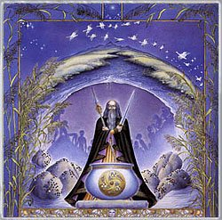

|

Mes: Octubre-Noviembre
Signo: Escorpio
Hierba lunar: Ortiga
Animal: Serpiente
Color: Gris y blanco.
Diosa: Selket
Nombres: Luna de Ngetal (carrizo o caña) para los celtas, Luna de la sangre para los Apalaches, Luna de la escarcha para los nativos americanos del nordeste, Luna de nieve para los wiccanos.
Los días de octubre y noviembre nos traen el viento frío que golpeando nuestras ventanas por la noche nos anuncia que el invierno ya se acerca.
Escorpio nos anima a comprender los misterios de la muerte y el renacimiento. Tiempo para reflexionar sobre nuestras vidas y sobre nuestra actitud frente a la muerte. El mejor antídoto contra la muerte es la sexualidad que todo lo regenera y el valor. El valor es esencial en la vida, es una emoción que nos ayuda a crecer enfrentándonos a nuestros miedos y limitaciones personales. En este tiempo nos apetece más quedarnos en casa y disfrutar de la intimidad del hogar. Antiguamente se revisaba al ganado, se hacía la matanza y se preparaban las conservas.
Otra característica lunar a tener en cuenta es la devoción. La devoción es una capacidad que va creciendo poco a poco en el corazón del sincero devoto. Cultivarla no siempre es sencillo, pues tenemos que orientar todas nuestras acciones y pensamientos al objeto de adoración. Si somos constantes nos sorprenderemos de los resultados que obtendremos de dicha práctica espiritual. No solo podemos devocionar a los dioses, también a nosotros mismos y a las personas y animales que nos rodean. La devoción es amor y cuidado constante.
FESTIVIDADES RELACIONADAS
- Las Tesmoforias: fiesta de la antigua Grecia celebrada en octubre en honor a Deméter y las mujeres. Solo participaban las mujeres casadas.
- El día de San Martín: En cualquier parte de Europa podemos observar cómo aún se hace la matanza del cerdo en estos meses, sobretodo en noviembre. El cerdo era un animal sagrado relacionado con los dioses de la tierra. Antiguamente se recogía la sangre y se rociaban las esquinas de las casas para mantener alejados a los malos espíritus. Casi todas las culturas en las que se practicaba el sacrificio animal trataban de espiritualizar el derramamiento de sangre. Parte del animal era presentada como ofrenda y el resto se destinaba al banquete.
- Festividad de las nueve hojas de loto: En la luna menguante de la decimoprimera luna se lleva a cabo en China la festividad de Kuan-yin, señora de las nueve hojas de loto que representan los nueve reinos de la filosofía budista. El decimonoveno día dr la luna, es sagrado para esta diosa. La diosa persa Anahita también era adorada durante el decimonoveno día de luna. Hay una teoría que afirma que este número se refiere a un ciclo de diecinueve años de las posiciones de puesta y salida de la luna.
- Baba Yaga: Es una festividad rusa que rendía culto a esta Diosa bruja. En la modernidad la han convertido en una bruja malvada pero en su origen se la honraba por su sabiduría y sus dotes como sanadora durante la luna llena de noviembre.
- Luna de los antepasados: En China durante la luna nueva de noviembre o diciembre se honra a los muertos. El hombre más anciano de la familia encabeza la procesión hacia el cementerio donde celebran una comida campestre junto a los difuntos.
|
 RSS
RSS